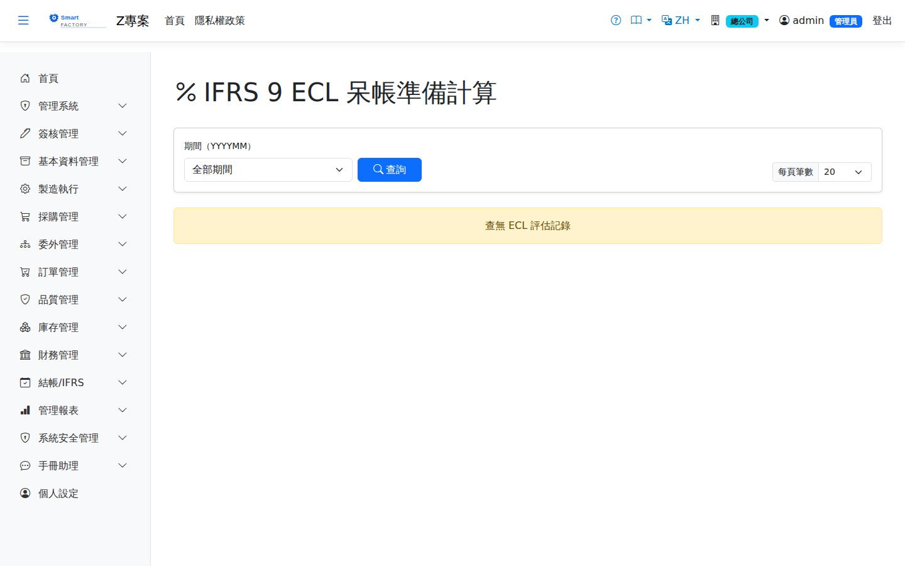

IFRS 9 ECL 準備IFRS 9 ECL Allowance
路由：/Ecl | 預期信用損失（簡化法）評估Route: /Ecl | Expected credit loss assessment (simplified approach)
依 IFRS 9 簡化法以帳齡矩陣估算應收帳款預期信用損失率，計算備抵損失。提列分錄在月結作業步驟 9 開立（借 6250 預期信用減損損失／貸 1179 備抵損失-應收帳款，調整到等於本期評估額）；月結步驟 6 也可以直接「執行 ECL」。Uses the IFRS 9 simplified approach and an aging matrix to estimate the expected credit loss rate on receivables, and calculates the allowance. The provisioning entry is posted at step 9 of Month-End Closing (Dr 6250 Expected credit impairment loss / Cr 1179 Loss allowance – AR, adjusted to equal this period's assessment); ECL can also be run directly with "Run ECL" on month-end step 6.

ECL 預期信用損失畫面截圖（示意，實際欄位/資料依權限與查詢條件而異）ECL expected credit loss screenshot (illustrative; actual fields and data vary by permission and query criteria)
查詢Search
1
查詢列輸入條件後點「查詢」；欄位標題可點擊排序，清單下方有分頁導航。Enter your criteria on the query bar and click "Search"; column headers can be clicked to sort, and the paging controls sit below the list.
2
以應收帳齡為基礎套用各桶損失率，可調整矩陣參數。Applies a loss rate to each bucket of the AR aging; the matrix parameters can be adjusted.
欄位說明Field reference
查詢條件Query criteria
| 條件Condition | 說明Guide |
|---|---|
| 期間（YYYYMM）Period (YYYYMM) | 要計算或查詢的會計期間The accounting period to calculate or query |
計算結果Result
| 欄位Field | 說明Guide |
|---|---|
| 期間Period | 本次 ECL 計算歸屬的會計期間Accounting period this ECL calculation belongs to |
| 帳齡區間Aging Bucket | 應收帳款依逾期天數分桶的區間名稱Name of the band receivables are bucketed into by days overdue |
| 應收帳款餘額AR Balance | 落在該帳齡區間內的應收帳款合計（本幣，總額 − 已收 − 已折讓）。客戶多付（負餘額）的發票不計入，也不會抵減其他發票Total receivables falling in the band (local currency, total − received − credited). Invoices the customer has overpaid (negative balance) are excluded and do not offset other invoices |
| 損失率Loss Rate | 該區間適用的預期信用損失率（%）Expected credit loss rate applied to the band (%) |
| ECL 準備金ECL Allowance | 應收帳款餘額 × 損失率，該區間應提列的備抵金額Receivable balance × loss rate, i.e. the allowance to provide for that band |
帳齡區間設定Aging band settings
| 欄位Field | 說明Guide |
|---|---|
| 帳齡區間Aging Bucket | 區間名稱，如「未逾期」「1–30 天」Name of the band, e.g. "not due" or "1–30 days" |
| 起（天）/ 迄（天）From (days) / To (days) | 該區間涵蓋的逾期天數範圍；區間之間不可重疊或留空隙Range of overdue days the band covers; the bands must not overlap or leave gaps |
| 損失率Loss Rate | 該區間的預期信用損失率（%），依歷史損失經驗與前瞻資訊設定Expected credit loss rate for the band (%), set from historical loss experience and forward-looking information |